Talca · Edificio Espacio Talca, piso 12
Clínica dental en Talca.
Del Dr. Manuel Rodríguez y su equipo de 8 profesionales. Coronas y carillas en una sola sesión con tecnología CEREC, implantes, ortodoncia, encías, endodoncia y dentista para niños.
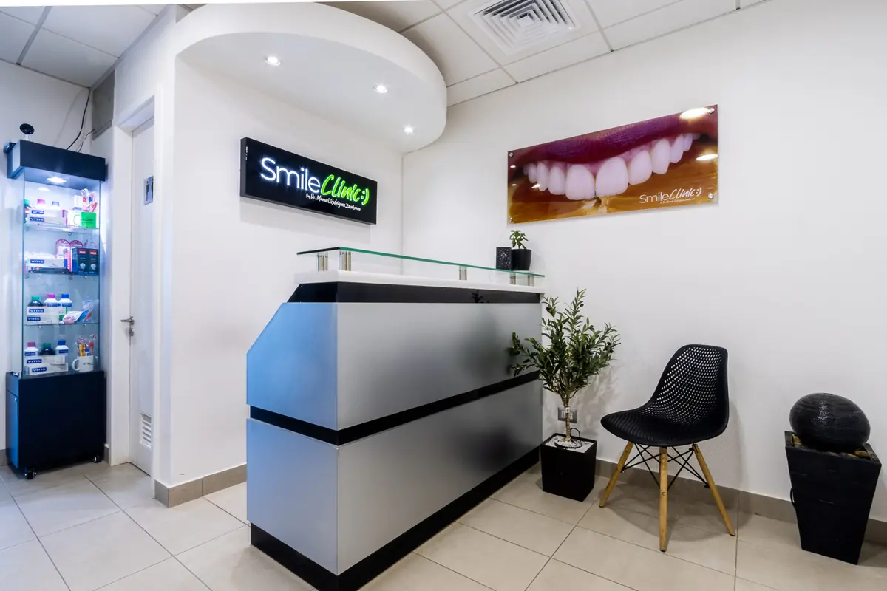
Tu primera hora
Así es la primera visita.
Igual para cualquier tratamiento, sin apuro y con todo claro desde el principio.
- 01
Nos escribes
Por WhatsApp o al (71) 227 0307. Te ofrecemos una hora con el profesional que necesitas.
- 02
Evaluación
El profesional conoce tu caso, revisa cómo estás y llega al diagnóstico. Vale $20.000.
- 03
Plan claro
Te explican qué tienes, qué opciones hay y cuánto cuesta cada una, antes de partir.
- 04
Formas de pago
Efectivo, transferencia, débito, crédito, QR o en cuotas con Gerty (sujeto a evaluación).
Especialidades
Cada tratamiento, con su especialista.
Recuperar y mejorar tu sonrisa
Tratamientos planificados con calma y con el valor claro desde la evaluación.
Salud de dientes y encías
Lo que quita el dolor y evita perder dientes.
Tecnología CEREC
Coronas y carillas en una sola sesión.
El Dr. Manuel Rodríguez trabaja hace más de 5 años con odontología digital CAD/CAM. Con el sistema CEREC se diseña y fabrica la pieza en la misma clínica, así muchos tratamientos se terminan en una sola visita.
- Coronas, carillas e incrustaciones en una sesión.
- Menos visitas y menos tiempo de tratamiento.
- El Dr. Rodríguez es speaker y trainer de Dentsply Sirona y Siromax Chile.
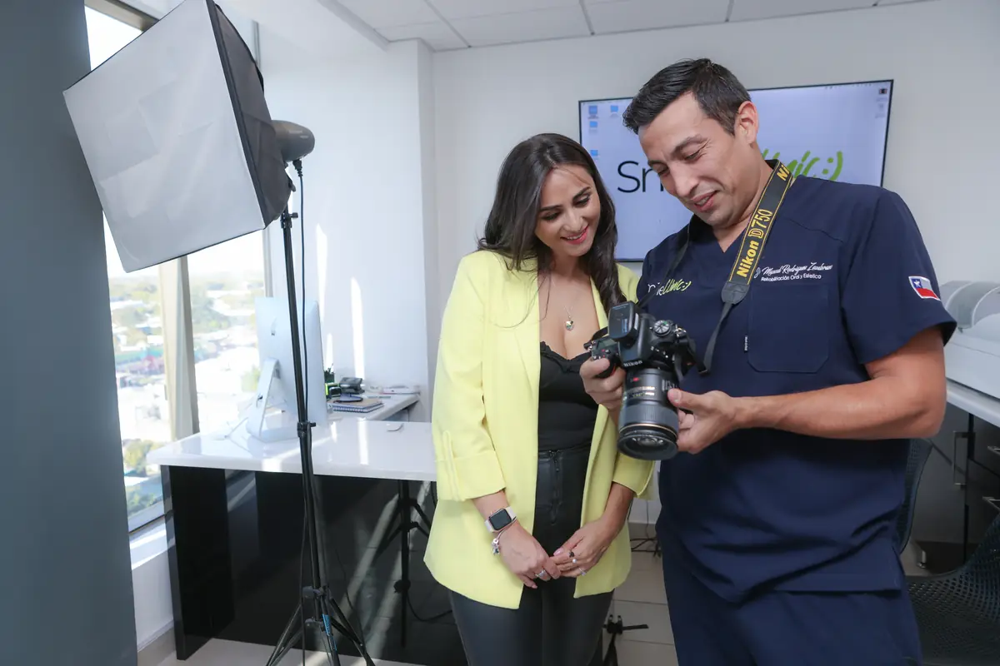
Casos clínicos
Antes y después, en pacientes de la clínica.
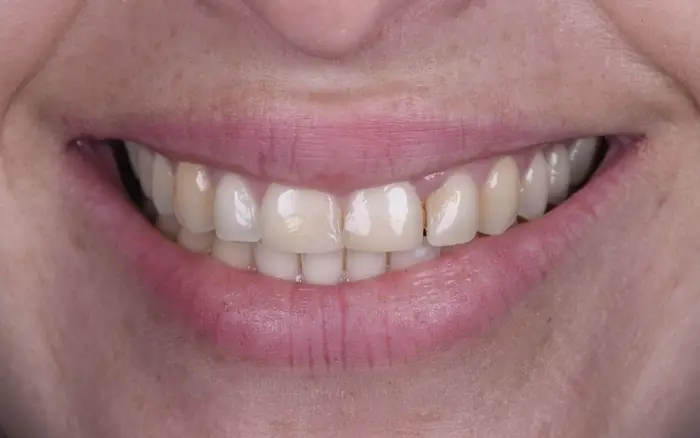
Antes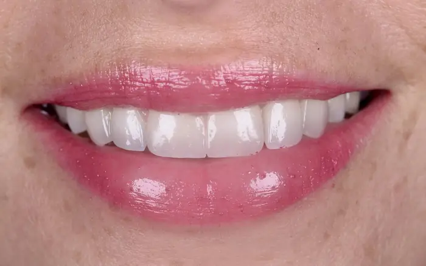
Después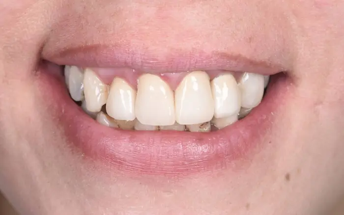
Antes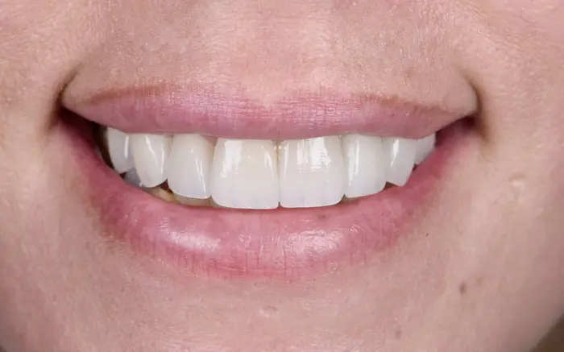
Después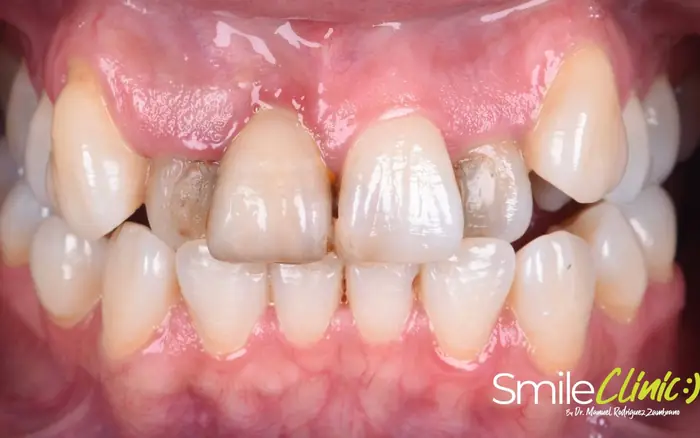
Antes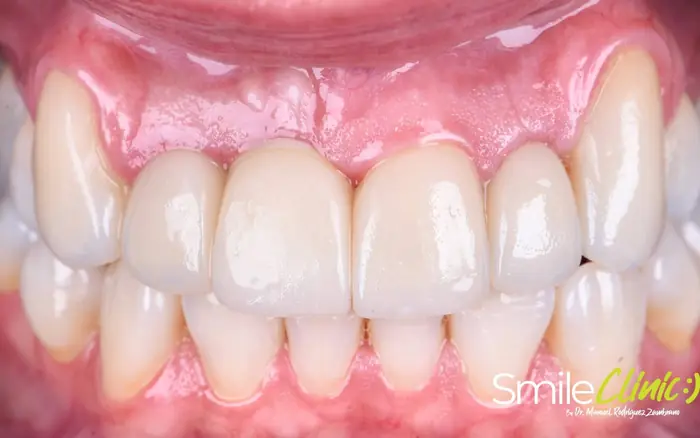
DespuésEl equipo
8 profesionales, cada uno en su especialidad.
La clínica la dirige el Dr. Manuel Rodríguez Zambrano, especialista en rehabilitación oral, con más de 17 años de experiencia.

Dr. Manuel Rodríguez Zambrano
Rehabilitación oral, estética e implantes

Dr. Camilo Ulloa Ortega
Implantes y cirugía de encías

Dr. Eladio Muñoz Rodríguez
Periodoncia e implantes
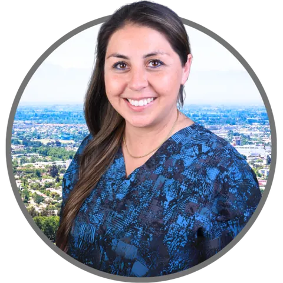
Dra. Natalia Yáñez Aravena
Rehabilitación oral
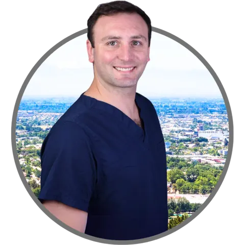
Dr. Franco Hasbún Medina
Ortodoncia
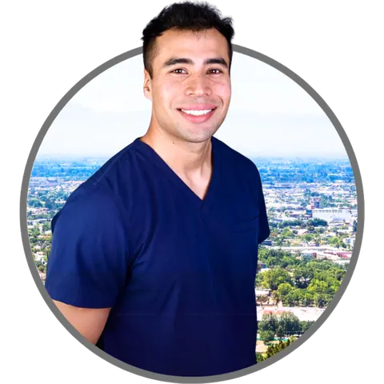
Dr. José Francisco Rodríguez Zambrano
Endodoncia
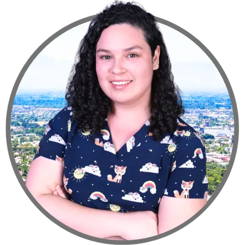
Dra. Sussan Valenzuela Berrios
Dentista para niños
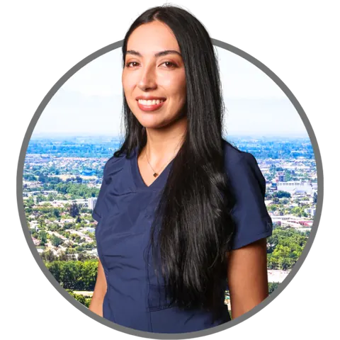
Dra. Rocío Veloso Montecino
Armonización orofacial
★★★★★
«Me siento muy bien en la clínica, especialmente por el trato, la delicadeza y el amor que da todo el equipo. Una se siente en una segunda casa.»María Y. · paciente
★★★★★
«Llegué con un pronóstico muy complejo y muchos tratamientos anteriores fallidos. Acá pude encontrar soluciones confiables y seguras.»Alejandra D. · paciente
★★★★★
«Me interesé primero que todo por su tecnología digital CEREC y por poder hacer carillas en tiempo récord. Recomiendo Smile Clinic.»Rita S. · paciente
Dudas
Preguntas frecuentes
¿Cuál es el horario de atención?
De lunes a viernes de 9:30 a 13:00 y de 14:15 a 19:00. En casos especiales, y según la agenda de cada profesional, se atiende el sábado en la mañana.
¿Dónde están?
En el Edificio Espacio Talca, Av. 2 Sur 870, piso 12, oficina 1214, entre 1 y 2 Oriente. Es una de las avenidas principales de Talca, con buena locomoción.
¿Hay estacionamiento?
Sí. En el piso -1 del edificio hay un estacionamiento público pagado, con entrada por calle 2 Oriente (vereda poniente, a mitad de cuadra).
¿Cómo agendo una hora?
Por WhatsApp al +56 9 5388 4785 (el botón verde de esta página) o llamando al (71) 227 0307.
¿La evaluación tiene costo?
Sí, la evaluación inicial con cada profesional vale $20.000. En ella conocen tu caso, revisan cómo estás y te dan el diagnóstico.
¿Qué formas de pago tienen?
Efectivo, transferencia, tarjeta de débito o crédito, pago con código QR y financiamiento en cuotas con Gerty (sujeto a evaluación).
Cómo llegar
Av. 2 Sur 870, piso 12.
Dirección
Av. 2 Sur 870, piso 12, oficina 1214, Edificio Espacio Talca (entre 1 y 2 Oriente), Talca.
Estacionamiento
Público y pagado en el piso -1 del edificio, con entrada por 2 Oriente.
Horario
| Lunes a viernes | 9:30 a 13:00 y 14:15 a 19:00 |
| Sábado | Solo casos especiales, en la mañana |
| Domingo | Cerrado |
WhatsApp y teléfono
Agenda tu hora
Escríbenos y te ofrecemos una hora.
Por WhatsApp te respondemos con las horas disponibles. La evaluación inicial vale $20.000.